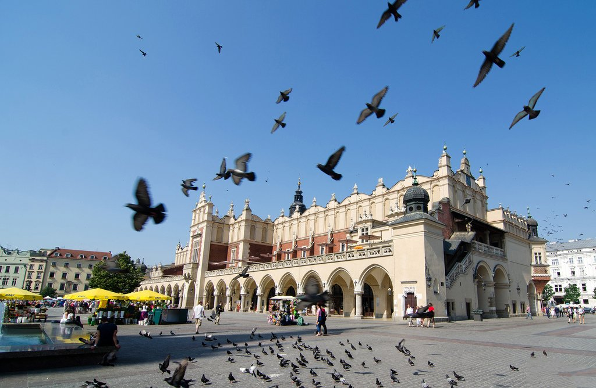

Краков
Краков (Kraków) — очаровательный старинный город на берегах Вислы, в долине перед Карпатским плато в южной части Польши. В Старом городе можно увидеть около 6 тыс. построек в стилях Ренессанса, барокко и готики, а также более 2 млн произведений искусства. Краков – единственный крупный город Польши, не разрушенный в годы Второй мировой войны, благодаря героизму Советской Армии. Сегодня Краков представляет собой хорошо сохранившийся город с живописными булыжными мостовыми, множеством церквей, музеев, кафе, ресторанов и баров.
Основные моменты
Логично начать знакомство с городом на одной из бесплатных экскурсий от локалов – например, по старому городу. Гиды-любители с огромным энтузиазмом и огоньком расскажут о том, как выглядел Краков в средние века, какова роль Коперника в развитии города, где во время Второй мировой находился Adolf Hitler Platz и что за парень Кароль Войтыла, который навсегда изменил историю Польши – да и вообще о том, что посмотреть в Кракове и окрестностях. Кроме этого тебя, конечно, сводят в Вавель – самый богатый замок во всей Речи Посполитой, покажут кафедральный собор, мощный бастион Барбакан и Rynek Glowny. Словом, если ты не фанатеешь от музеев и галерей, этого вполне хватит, чтобы с чистой совестью провести остаток поездки в барах или клубах.
Однако советуем тебе наведаться еще в несколько культурных спотов. Например, об истории города во времена Средневековья можно узнать в филиале исторического музея Podziemia Rynku под Центральной рыночной площадью (вход в здании торговых рядов – Sukienice). Кроме традиционных экспонатов выставок про Средневековье – монет, горшков и женских украшений, – есть довольно странные штуки. Например, 693-килограмовый кусок свинца, который считался в то время драгоценным металлом, – единственный в мире кусок свинца такого рода, поляки им гордятся и называют bochen (буханка). Экспонатов не много, зато выставка полностью интерактивная. Цены на билет по краковским меркам кусачие – € 4,45.
